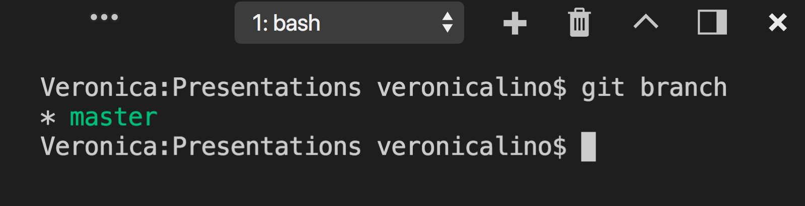
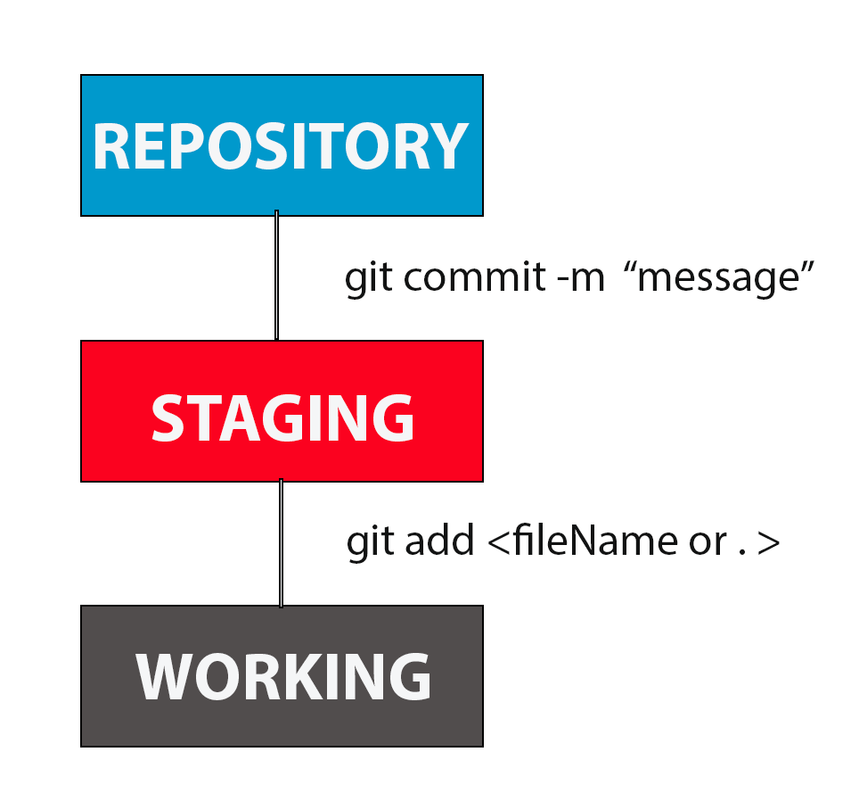

class: spaced layout: true --- class: inverse, center, middle # Viewing and Creating Local Branches --- # Git Branching Branching means you diverge from the main line of development and contine to do work without messing with that line -Git doesn't store data as a series of changesets or differences, but instead as a series of snapshots. --- <div> </div> Lists all of the branches in your __local__ repository. ```git $ git branch ``` <div>  </div> In this example, there is one branch named __master__. The asterisks next to branch name indicates that you are currenctly working from this directory. --- <div> <img class="centerImage" width="100%" src="Images/LocalMasterBranch.png"> </div> <div>  </div> --- <div> </div> Creates a new branch git branch --- <div> </div> --- <div> </div> --- # Switching Branches with Uncommitted Changes - working directory must be "clean" before switching to new branch - must commit all changes before switching - git will not allow you to switch without committing your changes. --- # Comparing Branches git diff command allows you to compare branches -- order of files doesn't matter ```git $ git diff master..(name of branch) ``` ```git $ git diff --color-words master..(name of branch) ``` --- # Renaming Branches - not actually moving, but renaming it. - names should be descriptive of the changes that you're making - use a ticket name ```git $ git diff --color-words master..(name of branch) ``` --- # Deleting Branches - can't delete the branch that you're currently on ```git $ git branch -d (branch to delete) ``` Overrides warnings ```git $ git branch -D (branch to delete) ``` --- # Merging Code - checkout the branch that you are going to merge things into (the receiver) ```git $ git merge (branch to merge) ``` ---